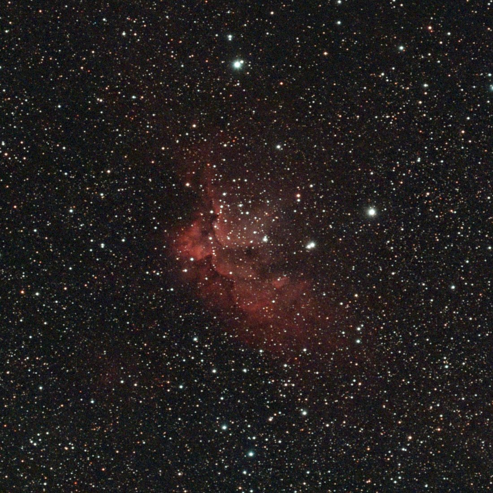
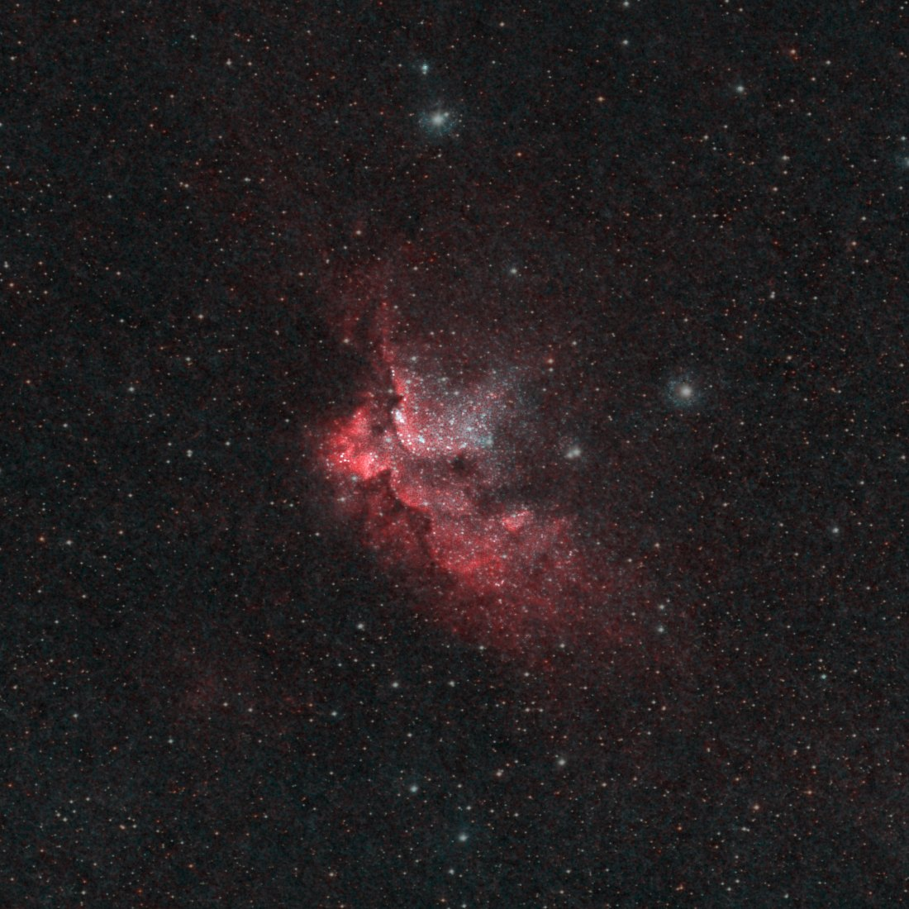
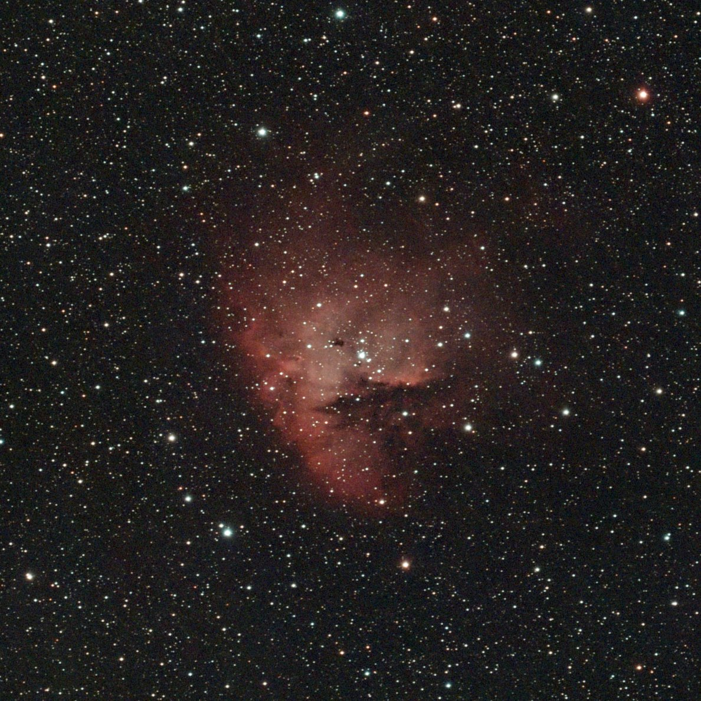
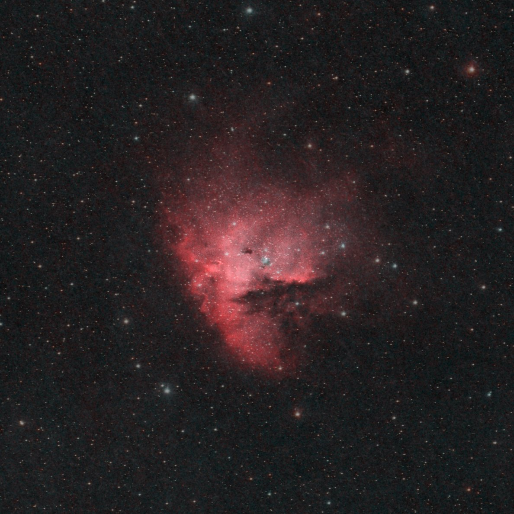

Night log · Tuesday 27 October 2026
The Wizard and the Pacman, under a bright Moon
The plan
The first clear night after the full Moon, and the Moon was still 95% lit and up all night. That rules out galaxies and anything faint and blue, but not emission nebulae. The scope's dual-band filter only lets through two narrow slices of colour: the deep red of glowing hydrogen and the teal of oxygen. Moonlight is spread across the whole spectrum, so most of it never reaches the sensor.
Two targets were high overhead from the back garden all evening, well clear of the house:
- The Wizard Nebula (NGC 7380) in Cepheus, first, while it was near its highest.
- The Pacman Nebula (NGC 281) in Cassiopeia, from midnight, as it climbed to 85°.
The forecast gave clear sky until about two in the morning, with cloud building after that. No rain, and gusts up to about 30 km/h, so the tripod went low on the wedge.
- Captured
- 21:50–03:25
- Settings
- 20 s · gain 200 · dual-band
- Moon
- 95% lit, up all night
- Mount
- TH10 wedge, EQ
Polar alignment, checked
The app's polar alignment read 0.1° in both directions at 21:30. That number has been optimistic before, so Claude checked it the slow way: it plate-solved the first few frames, worked out exactly where in the sky each one pointed, and measured how fast the stars crept. The drift was about 3 arcseconds a minute in each direction, which means the real error was around 0.2°. That's close enough for 20-second frames: the stars stayed round all night.
The night
The night runner did the rest on its own. It refocused four times as the air cooled, re-centred every half hour, and switched from the Wizard to the Pacman at 23:50. Not one frame was lost to cloud before the planned end at 02:15. It took its darks and parked.
Two things didn't go to plan. The mount ignored the tiny guide pulses the software uses to nudge the framing, so there was no dithering, and every re-centre had to be a full slew instead. Those slews only land to within about 5 arcminutes, and a bug left the final one unchecked, so for parts of the night each target sat 10–14 arcminutes off-centre. Both nebulae are small enough that they stayed well inside the frame, and the pictures here are cropped around them. The fix is on the list for before the next night.
There was no power bank on the scope. After the main run the battery was at 34%, and the sky still looked clear, so the Pacman got a second helping from 02:40. The cloud the forecast had promised arrived at about 03:20, and the scope paused itself when the star count halved. The last few hazy frames were left out.
- Wizard
- 239 × 20 s · 1 h 20 min
- Pacman
- 382 × 20 s · 2 h 7 min
- Lost to cloud
- 9 frames, at the very end
The Wizard Nebula (NGC 7380)
The Wizard is a cloud of hydrogen about 7,000 light years away, lit up by a young star cluster forming inside it. The cluster's light and wind are carving the cloud into the shape that gives it its name: a figure in a pointed hat, facing left, with the bright ridge along its back. The darker lanes running through it are dust that hasn't been blown away yet.

The Wizard sits in the Milky Way, so the field is packed with stars. The second version below is processed in the HOO palette: hydrogen as red and oxygen as teal, with the stars shrunk so the gas stands out. The oxygen shows as a pale blue-white glow in the middle, closest to the hot young stars.

The Pacman Nebula (NGC 281)
The Pacman is about 9,000 light years away in Cassiopeia. It's the same kind of object as the Wizard: a hydrogen cloud lit by the young cluster inside it, IC 1590. The mouth is a lane of dark dust lying in front of the glowing gas, so it blocks the light from behind.

With over two hours of frames, the detail inside the mouth starts to show. Just above it, near the brightest stars, are a few small dark blobs. These are Bok globules: dense knots of dust and gas, each a light year or so across. Some of them are collapsing and may become stars.

Next
A bright Moon turned out not to matter much for these two. The dual-band filter did its job, and both nebulae came through clearly in one night. The next jobs are on the software side: fix the re-centring so the targets stay in the middle, and get the dithering working again. After that, the Flying Bat (Sh2-129) is next on the list. It's far fainter than either of these and will need several nights.